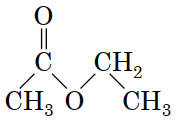
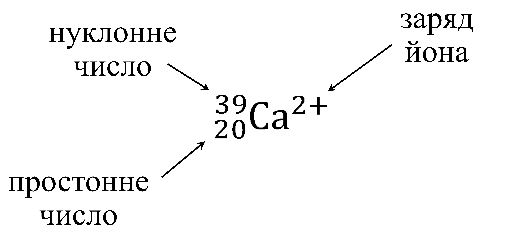
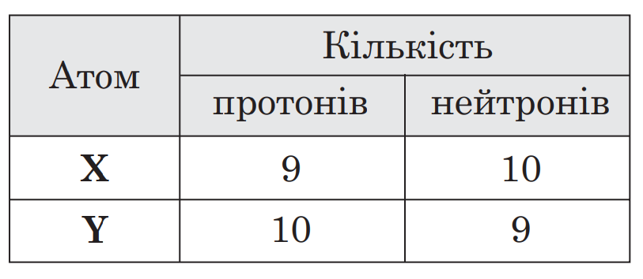
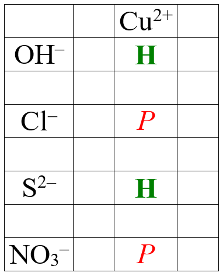

Перейти:
Неорганічна хімія
Органічна хімія
Загальна хімія
-
Структурна, молекулярна та найпростіша формули
Структурна формула відображає зв’язки між атомами у складі молекули:
- Хімічна формула або молекулярна формула відображає кількісний склад молекули: С4Н8О2
- Найпростіша формула відображає співвідношення між атомами у складі речовини (слід скоротити індекси у хімічній формулі): С2Н4О
-
Із нуклідного символа ми можемо отримати наступну інформацію:
- Протонне число — тобто кількість протонів у ядрі атома = порядковому номеру у періодичній системі = заряду ядра (оскільки кожен протона має заряд +1, то при протонному числі 20, заряд ядра — +20).
- Нуклонне число (масове число) — кількість протонів + кількість нейтронів у складі ядра — приблизно відповідає масі атома, оскільки маса протонів та нейтронів (нуклонів) рівна 1, то при нуклонному числі 39 маса атома буде ≈ 39 (оскільки маса електрона надзвичайно мала).
- Кількість нейтронів = нуклонне число – протонне число: 39–20=19
- Кількість електронів = кількість протонів — заряд йона: 20–(+2)=18 (оскільки заряд електрона рівний –1, протона +1, то при співвідношенні протонів до електронів 20:18 заряд буде +2)
- Ізотопи — різновиди одного хімічного елемента, з однаковими протонними числами (від протонного числа залежить, який це елемент: 1 — Н, 2 — Не тощо) але різними нуклонними числами, наприклад: 35Cl та 37Cl.
-
Типове завдання ЗНО:
Атоми Х та Y є ізотопами — неправильна відповідь
Нуклонні числа у атомів Х та Y однакові — правильна відповідь
Неорганічна хімія
-
Типове завдання ЗНО: Яку газувату речовину збирають витісненням води?
Кисень — правильна відповідь (бо він не розчиняється у воді)
Водень — правильна відповідь (бо він не розчиняється у воді)
*треба знати на пам’ять варіанти „водень/кисень“ щоб відповісти на конкретно таке питання
Гідроген хлорид — неправильна відповідь (бо він розчиняється у воді)
Карбон(ІV) оксид — неправильна відповідь (бо він розчиняється у воді)
-
Типове завдання ЗНО:

З водного розчину купрум(ІІ) сульфту осадити катіони Cu2+ можна за допомогою водного розчину
Калій гідроксиду — правильна відповідь (бо Cu2+ та OH– дає Нерозчинну сполуку)
Натрій сульфіду — правильна відповідь (бо Cu2+ та S2– дає Нерозчинну сполуку)
*треба користуватись таблицею розчинності, розв’язуючи подібні завдання
барій хлориду — неправильна відповідь (бо Cu2+ та Cl– дає Pозчинну сполуку)
натрій нітрату — неправильна відповідь (бо Cu2+ та NO3– дає Pозчинну сполуку)
-
Типове завдання ЗНО: Термічне розкладання якої солі є окисно-відновною реакцією?
магній нітрату — правильна відповідь (бо нітрат)
KNO3 — правильна відповідь (бо NO3)
*треба знати на пам’ять, що нітрат/NO3 — це дуже часто про окисно-відновні реакції; термічний розклад нітрату/NO3 — завжди окисно-відновна
натрій карбонату — неправильна відповідь (бо не нітрат)
CuSO4 — неправильна відповідь (бо не NO3)
- new line to try